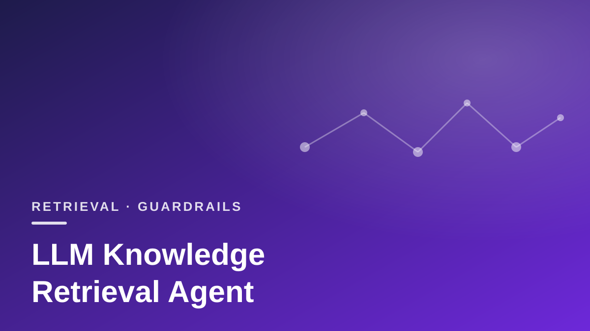
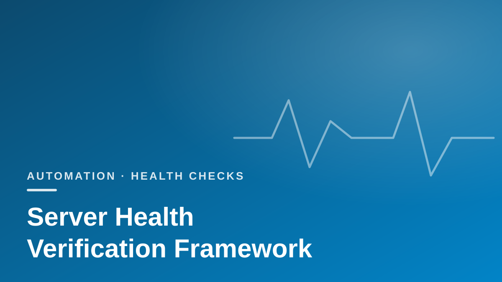
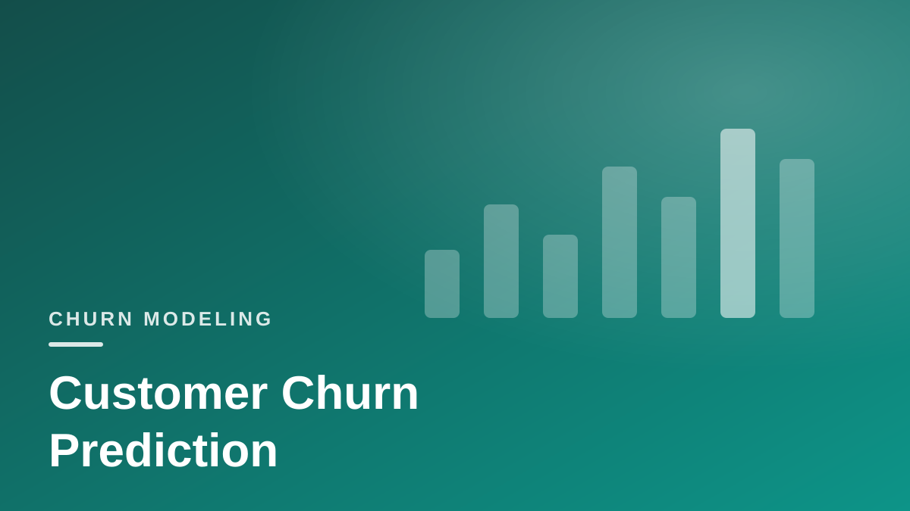
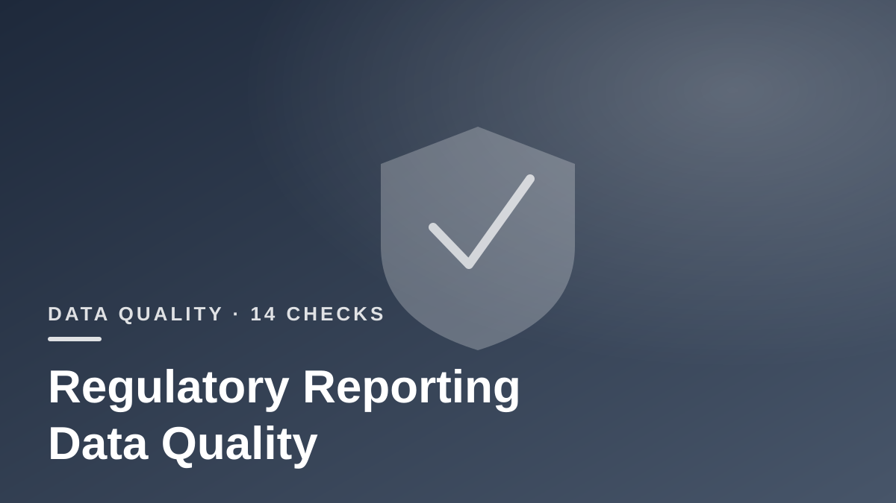
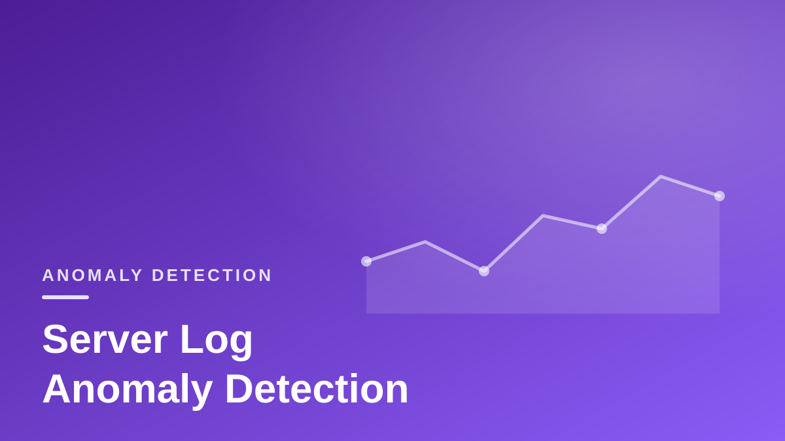
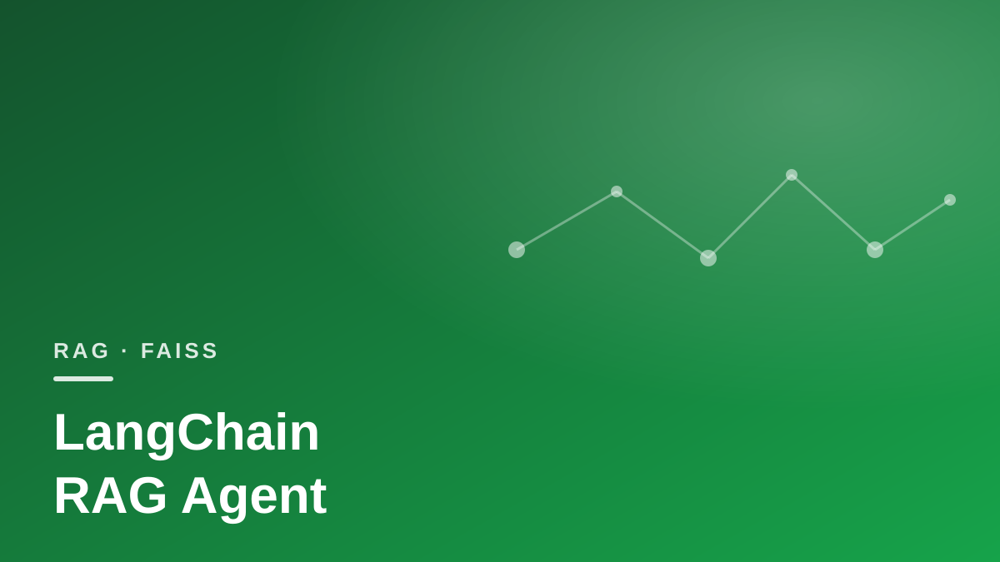
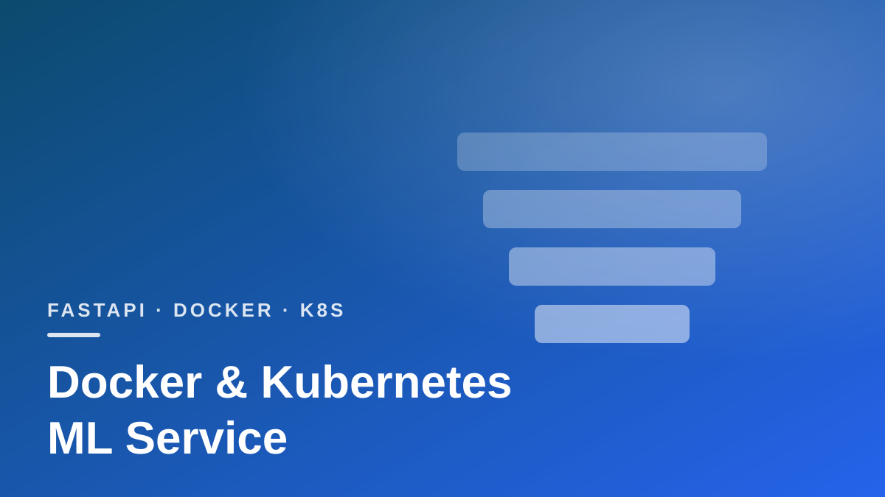
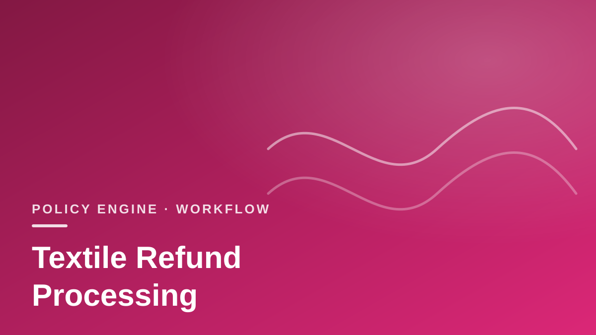

Open-source demos of the patterns behind my production work — original code, sample data only.

Demo of production work at Morgan Stanley
A retrieval agent that answers operations questions from runbooks and documentation, with sources cited — and a guardrail that makes it refuse rather than guess when nothing in the knowledge base supports an answer. In production, this pattern put team knowledge in reach of the whole operations team without external LLM tools.
Python · scikit-learn · TF-IDF retrieval

Demo of production work at Morgan Stanley
Parallel health-check automation: configurable checks run across many targets at once, with per-check validation, a summary report, and an audit log. The production version verifies the production and test server fleet after OS patching, with zero missed checks since launch.
Python · concurrent.futures · automation

Demo of production work at McDonald's
Customer-360 style churn modeling: transaction, engagement, and feedback-sentiment features feed a classifier whose scores become a daily-insights summary. The production platform covered nightly restaurant sales data with models at 70–90% accuracy. This demo runs on synthetic data only.
Python · scikit-learn · feature engineering
Demo of production work at McDonald's
Batch ETL with a data-quality layer that reverts and quarantines bad files instead of loading them — extract, validate every row, load clean data, reload safely after a fix. The production pipeline runs nightly across 6+ global markets.
Python · SQLite · Airflow pattern · data quality
Personal project — AI for energy systems
Why does a solar plant export so much less than it generates? This demo simulates a 300 kWp plant on synthetic data, tracks every loss stage between the panels and the grid meter, and uses ML to forecast generation, flag underperforming strings, and rank the fixes by recoverable energy. In the demo run, 16.2% of generated energy never reaches the grid.
Python · scikit-learn · pandas · energy systems
Demo project — synthetic data only
Denial prediction on 5,930 synthetic claims: a GradientBoosting model (ROC-AUC 0.795) scores each claim's denial risk before submission, and the analysis ranks what's actually driving denials — missing prior authorisation denies at 63.9% vs 16.2% without — with an estimate of the denied dollars recoverable by fixing the top driver.
Python · scikit-learn · pandas · classification

Demo project — synthetic data only
A pre-submission data-quality framework for financial reporting extracts: 14 named checks across schema, completeness, validity, uniqueness, consistency, and reconciliation against a control file. In the demo run, all 295 planted defects in 5,040 synthetic records are caught and quarantined — a 94.15% DQ score.
Python · pandas · data quality · validation
Demo project — synthetic data only
Daily demand forecasting for 8 synthetic restaurants. A RandomForest over day-of-week, holidays, weather, promotions, events, and feedback sentiment forecasts orders at MAE 28.0 (R² 0.832), beating a naive last-week baseline by 22.6% — then turns next week's forecast into prep and staffing tiers for each location.
Python · scikit-learn · pandas · forecasting

Demo project — synthetic data only
A generic log-anomaly demo over roughly 190K synthetic log lines from 10 hosts. Lines are parsed into per-host 30-minute windows and scored two ways — IsolationForest and per-host z-score baselines — catching 42 of 46 planted anomaly windows between them: an error burst, a latency spike, and one host failing slowly.
Python · scikit-learn · pandas · anomaly detection
Personal project — synthetic data only
A complete dbt project on synthetic restaurant sales data — staging → intermediate → marts in DuckDB, with revenue recomputed from line items rather than trusted from source totals. In the verified run, dbt build passes 39/39 (8 models, 31 tests) and the data-quality mart catches all 19 planted order-total mismatches, plus 12 orders with no line items.
dbt · DuckDB · Python · data quality

Personal project — synthetic data only
A LangChain retrieval agent over 10 synthetic operations runbooks: documents are chunked, embedded with MiniLM, and indexed in FAISS; the agent answers only from retrieved passages, cites the source file for every answer, and refuses when nothing is close enough. On its 13-question evaluation it scores hit-rate@3 of 13/13 — every correct source at rank 1 — and refuses all 3 off-corpus probes.
Python · LangChain · FAISS · vector search

Personal project — synthetic data only
An ML inference service packaged the production way: a scikit-learn churn model (ROC-AUC 0.7964 on held-out synthetic data) served by FastAPI, containerised with Docker and deployed with Kubernetes manifests carrying health probes and resource limits. A 60-prediction smoke test reports p95 latency of 63.9 ms.
Python · FastAPI · Docker · Kubernetes

Demo project — synthetic data only
A refund desk for a textile shop that takes the stress out of refunds: a policy engine gives staff a clear recommendation for every request, a guided workflow with an audit trail carries it through, kind customer messages go out at each step, and a short feedback survey after each resolution turns refunds into reviews. A 48-test suite covers every policy outcome, workflow move, and message template.
Python · SQLite · pytest